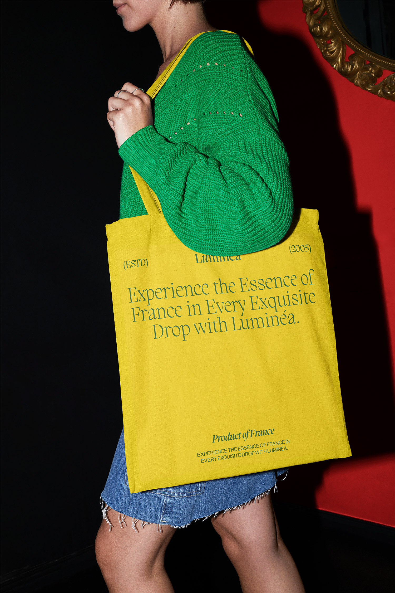
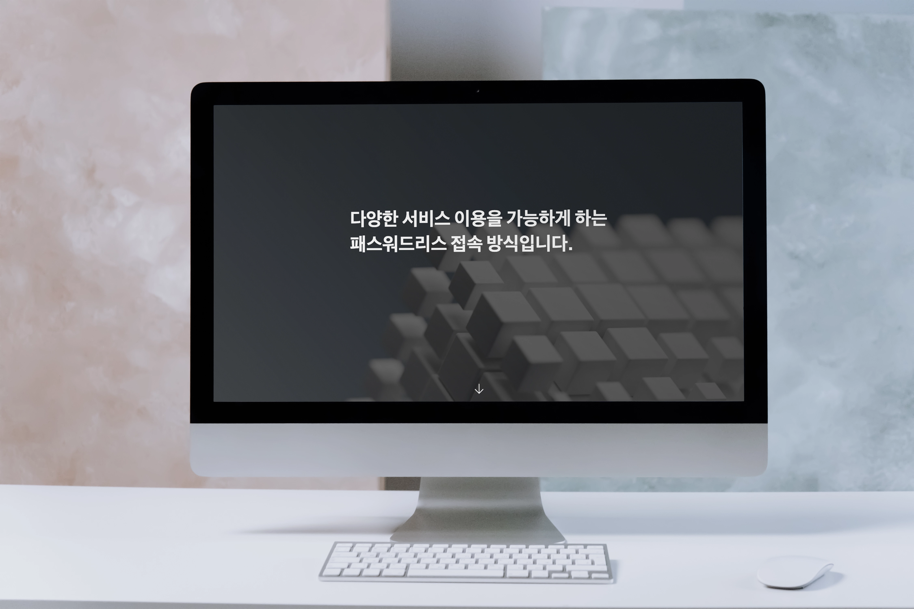
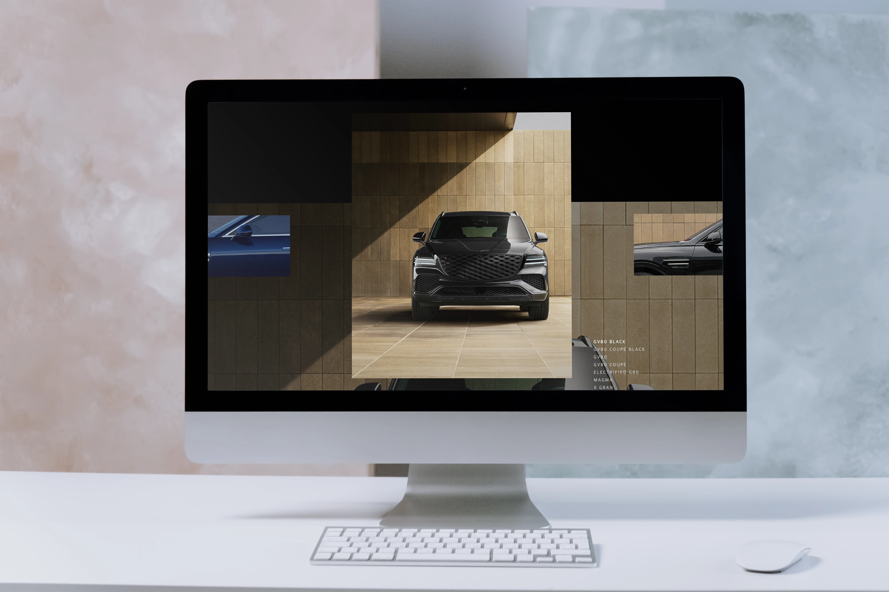
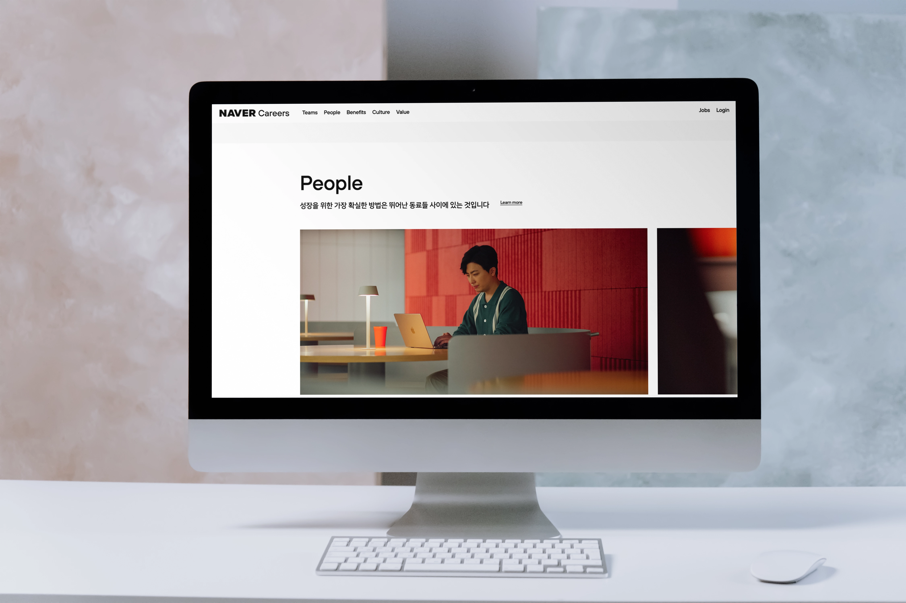
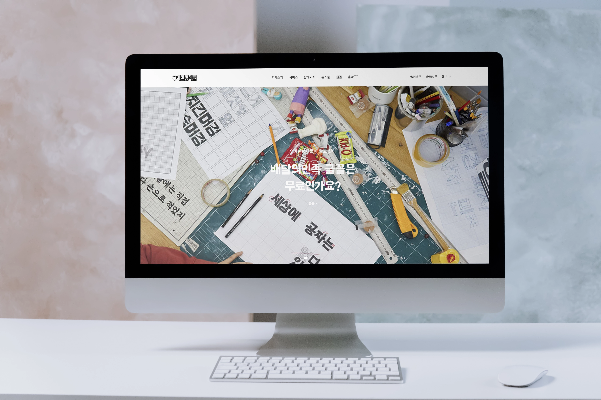
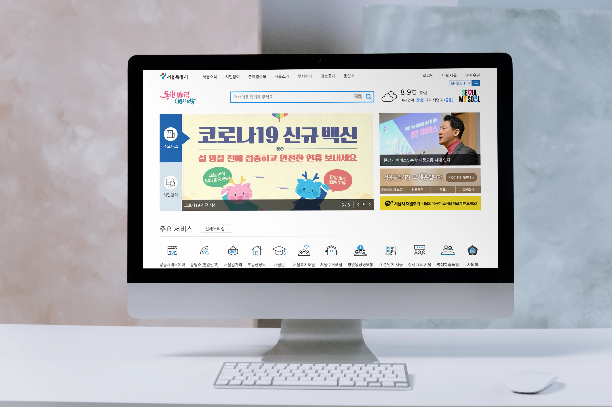
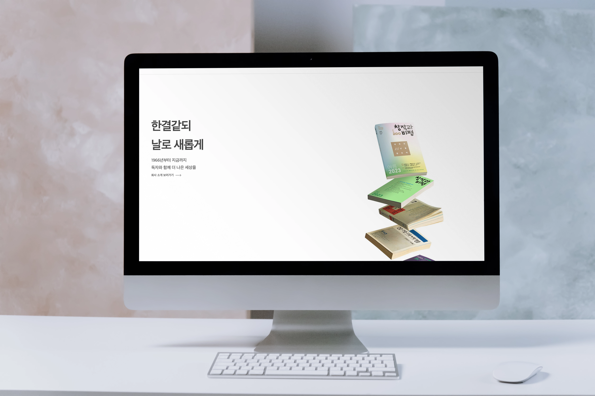
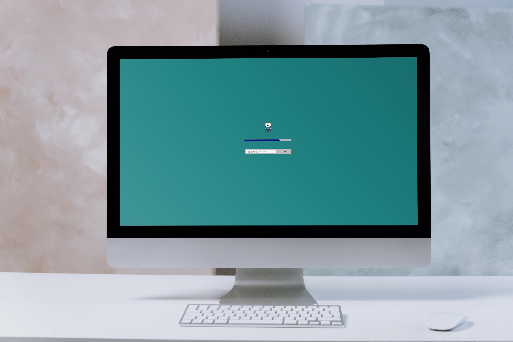

goal
With a keen eye for detail and a strong command of HTML, CSS, and JavaScript, I am to create visually appealing websites. I am always passionate about learning new trends and tools to enhance my publishing skills. My goal is to master the latest technologies, continually evolve, and ensure that every project I work on provides an intuitive, immersive, and visually stunning user experience.
front

introduce
시맨틱 태그를 활용한 마크업으로 뼈대가 탄탄하고 명확한 웹구조를 지향합니다. UI의 다채로운 색감을 생각하고 UX로 사용자들에게 더 나은 방향을 제공하고 싶습니다. 트렌드에 발 맞추어 성장하고 스스로 역량을 키워나가는 사람이 되고자 합니다.
project
-
기여도:100% #SCSS #GSAP제네시스
SCSS를 사용하여 제네시스를 리뉴얼하였으며 ScrollTrigger로 다양한 애니메이션 효과에 중점을 둔 사이트입니다
-
 기여도:100% #SCSS #JSON #비동기 #SWIPER안다르
기여도:100% #SCSS #JSON #비동기 #SWIPER안다르JSON을 이용해 직접 데이터를 담아 Fetch 문법으로 데이터를 연동한 클론코딩 안다르 모바일형 사이트입니다.
-
기여도:100% #GSAP #SCROLLTRIGGER엔터프라이즈블록
GSAP 활용에 중점을 두고 클론코딩한 PC형 사이트입니다.
-
기여도:100% #JQUERY #SWIPERNaver Career
label을 사용한 선택 및 Swiper 활용에 중점을 두고 클론코딩한 반응형사이트입니다.
-
기여도:100% #JQUERY #SWIPER우아한 형제들
클론코딩을 통한 시멘틱 마크업의 중요성과 미디어쿼리를 활용하여 디바이스 분기별 작업에 중점을 둔 반응형사이트입니다.
-
기여도:100% #웹접근성 #JQUERY #SWIPER서울시청
키보드 탭으로도 이동가능하게 접근성에 중점을 두고 클론코딩한 PC형 사이트입니다.
-
기여도:100% #REACT #외부API #AXIOS창비 책검색 사이트
통신 라이브러리 Axios를 사용하여 외부 API를 연동하고 프레임워크 리액트로 클론코딩한 PC형 사이트입니다.
-
기여도:100% #JS #Web APIto do list
JS를 공부하기 위한 과정으로 Web API 로컬스토리지를 사용하여 만든 TO-DO list 반응형사이트입니다.
Have questions about me?
-
(01) 웹 퍼블리셔의 길을 선택하게 된 계기가 무엇인가요?영양사로 일하면서 느낀 발전의 한계를 극복하고자 웹 개발이라는 새로운 분야에 뛰어들었습니다. 이는 단순한 직업 전환이 아닌, 제 열정을 새롭게 불태울 수 있는 기회였습니다. HTML, CSS, JavaScript를 공부하며 매일 조금씩 성장하는 제 모습을 보았고, 이 분야에 대한 확신과 열정이 더욱 커졌습니다. 특히 즉각적인 시각적 결과물을 확인할 수 있다는 점에 매력이 되어 제가 꾸준히 공부할 수 있는 원동력이 되었습니다. 퍼블리셔로서 웹사이트의 구조와 디자인, 기능을 세심하게 조정하며, 크로스 브라우징과 웹 접근성 문제에 집중했고, 이 과정에서 제 꼼꼼한 성향이 큰 강점으로 작용하였습니다. 작은 디테일이 웹사이트의 품질과 유지보수에 직결된다는 점을 항상 명심하고, 이러한 열정과 끈기로 지속적으로 성장하고 있습니다.
-
(02) 자기 개발은 주로 어떤 방법으로 하고 계신가요?저는 직업인으로서 자신의 능력과 적성을 이해하고 목표를 성취하기 위해 스스로를 관리하며 개발하는 능력을 중요하게 생각합니다. 자기 개발을 위해 주 3회 운동을 하고, 취침 전 5분 독서를 실천하며 꾸준한 자기 관리를 이어가고 있습니다. 더 나아가, 디자이너의 요구를 충족시키면서도 개발자가 편리하게 작업할 수 있는 확장성 있는 UI를 구현하는 퍼블리셔가 되는 것을 목표로 하고 있습니다. 이를 위해 하루 1시간씩 개발 지식을 꾸준히 쌓고 있으며, 현재 방송통신대학교에서 프로그래밍 역량을 더욱 확장해 나가고 있습니다.
-
(03) 공부 할 때, 궁금한 게 생기면 어떻게 해결하였나요?궁금한 점이 생기면, 구글 검색이나 공식 문서를 활용합니다. 이를 통해 기본적인 개념과 문제 해결 방법을 찾아내고 이해합니다. 또는 Stack Overflow와 같은 개발자 커뮤니티를 적극 활용합니다. 다른 개발자들의 경험과 해결책을 참고하여 문제 해결 능력을 향상시킵니다. 마지막으로 학습한 내용을 꼼꼼히 메모하고 주기적으로 복습합니다. 이를 통해 지식을 내재화하고 응용력을 키웁니다. 이러한 학습 방식을 통해 단순히 문제를 해결하는 것을 넘어 깊이 있는 이해를 추구합니다.
-
(04) 웹 퍼블리셔에게 필요한 역량이란 무엇일까요?우선, HTML, CSS, JavaScript에 대한 전문 지식이 필수적입니다. 이를 통해 웹의 기본 구조를 설계하고, 스타일링하며, 동적 상호작용을 구현할 수 있어야 합니다. 또한, 디자이너의 요구사항을 정확히 이해하고 시각적으로 일관된 UI를 구현하는 능력이 중요합니다. 크로스 브라우징과 반응형 웹 구현 능력도 갖추어야 합니다. 이를 통해 다양한 기기와 브라우저에서 일관된 사용자 경험을 제공할 수 있습니다. 더불어 검색 엔진 최적화(SEO)와 웹 접근성에 대한 이해도 필요합니다. 이는 웹사이트의 가시성과 사용성 향상에 크게 기여합니다. 팀 협업 능력도 매우 중요합니다. 디자이너, 개발자와 원활하게 소통하며 프로젝트를 성공적으로 이끌어야 합니다. 또한, 작업 중 발생하는 기술적 문제를 신속히 해결하고, 사용자 경험을 극대화하며 유지 보수가 용이한 웹사이트를 제작하는 것이 퍼블리셔의 목표입니다. 마지막으로, 지속적인 학습과 성장에 대한 열정이 필요합니다. 웹 기술은 빠르게 발전하고 있어, 새로운 기술과 트렌드를 꾸준히 익히고 적용하는 자세가 중요합니다.
-
(01) 웹 퍼블리셔의 길을 선택하게 된 계기가 무엇인가요?영양사로 일하면서 느낀 발전의 한계를 극복하고자 웹 개발이라는 새로운 분야에 뛰어들었습니다. 이는 단순한 직업 전환이 아닌, 제 열정을 새롭게 불태울 수 있는 기회였습니다. HTML, CSS, JavaScript를 공부하며 매일 조금씩 성장하는 제 모습을 보았고, 이 분야에 대한 확신과 열정이 더욱 커졌습니다. 특히 즉각적인 시각적 결과물을 확인할 수 있다는 점에 매력이 되어 제가 꾸준히 공부할 수 있는 원동력이 되었습니다. 퍼블리셔로서 웹사이트의 구조와 디자인, 기능을 세심하게 조정하며, 크로스 브라우징과 웹 접근성 문제에 집중했고, 이 과정에서 제 꼼꼼한 성향이 큰 강점으로 작용하였습니다. 작은 디테일이 웹사이트의 품질과 유지보수에 직결된다는 점을 항상 명심하고, 이러한 열정과 끈기로 지속적으로 성장하고 있습니다.
-
(02) 자기 개발은 주로 어떤 방법으로 하고 계신가요?저는 직업인으로서 자신의 능력과 적성을 이해하고 목표를 성취하기 위해 스스로를 관리하며 개발하는 능력을 중요하게 생각합니다. 자기 개발을 위해 주 3회 운동을 하고, 취침 전 5분 독서를 실천하며 꾸준한 자기 관리를 이어가고 있습니다. 더 나아가, 디자이너의 요구를 충족시키면서도 개발자가 편리하게 작업할 수 있는 확장성 있는 UI를 구현하는 퍼블리셔가 되는 것을 목표로 하고 있습니다. 이를 위해 하루 1시간씩 개발 지식을 꾸준히 쌓고 있으며, 현재 방송통신대학교에서 프로그래밍 역량을 더욱 확장해 나가고 있습니다.
-
(03) 공부 할 때, 궁금한 게 생기면 어떻게 해결하였나요?궁금한 점이 생기면, 구글 검색이나 공식 문서를 활용합니다. 이를 통해 기본적인 개념과 문제 해결 방법을 찾아내고 이해합니다. 또는 Stack Overflow와 같은 개발자 커뮤니티를 적극 활용합니다. 다른 개발자들의 경험과 해결책을 참고하여 문제 해결 능력을 향상시킵니다. 마지막으로 학습한 내용을 꼼꼼히 메모하고 주기적으로 복습합니다. 이를 통해 지식을 내재화하고 응용력을 키웁니다. 이러한 학습 방식을 통해 단순히 문제를 해결하는 것을 넘어 깊이 있는 이해를 추구합니다.
-
(04) 웹 퍼블리셔에게 필요한 역량이란 무엇일까요?우선, HTML, CSS, JavaScript에 대한 전문 지식이 필수적입니다. 이를 통해 웹의 기본 구조를 설계하고, 스타일링하며, 동적 상호작용을 구현할 수 있어야 합니다. 또한, 디자이너의 요구사항을 정확히 이해하고 시각적으로 일관된 UI를 구현하는 능력이 중요합니다. 크로스 브라우징과 반응형 웹 구현 능력도 갖추어야 합니다. 이를 통해 다양한 기기와 브라우저에서 일관된 사용자 경험을 제공할 수 있습니다. 더불어 검색 엔진 최적화(SEO)와 웹 접근성에 대한 이해도 필요합니다. 이는 웹사이트의 가시성과 사용성 향상에 크게 기여합니다. 팀 협업 능력도 매우 중요합니다. 디자이너, 개발자와 원활하게 소통하며 프로젝트를 성공적으로 이끌어야 합니다. 또한, 작업 중 발생하는 기술적 문제를 신속히 해결하고, 사용자 경험을 극대화하며 유지 보수가 용이한 웹사이트를 제작하는 것이 퍼블리셔의 목표입니다. 마지막으로, 지속적인 학습과 성장에 대한 열정이 필요합니다. 웹 기술은 빠르게 발전하고 있어, 새로운 기술과 트렌드를 꾸준히 익히고 적용하는 자세가 중요합니다.